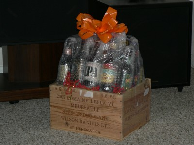
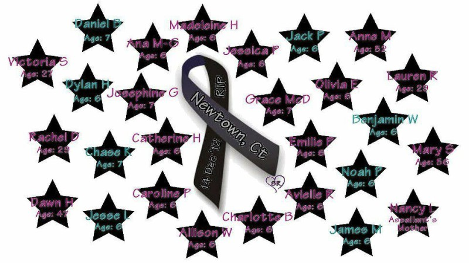
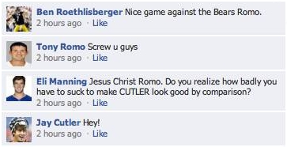

2012 Schedule/Results

Week: 1 2 3 4 5 6 7 8 9 10 11 12 13 14 15 16 17
| Weekly/Yearly Honors | |
|---|---|
| * | |
| * | Most points in a game (year) |
| * | Fewest points in a game (year) |
| * | Most lopsided victory (year) |
| Week 1 NFL Schedule |
|||
|---|---|---|---|
| Beer 'n Broads | 46 | Rhoads Roadies | 24 |
| Pugilistic Monkeys | 15 | Itchy Tortugas* | 54 |
| Lawrence of ALabia | 34 | Fixated Yetis | 31 |
| Ball Busters | 46 | Frank and Beans | 34 |
| Rac Seekers | 43 | Kentucky Head Hunters | 38 |
|
Beer 'n Broads douse Rhoads Roadies 46-24. Coors 'n whores hear the roars for "Discount double check!" as the lightning rod for Viking hatred posts 303/2 - in a Packer loss - while Andre (119/1) and Gronk (60/1) catch a buzz and the Blair Walsh project gets 14 good reviews. The overblown Cyclones are all about Arian as Foster forges fifty ... percent of the offense, with 79/2, while Eli needs over fifty... minutes to tally his lone TD pass and fifty percent of the starters don't get their scoring started. The Beers look mighty refreshing after the long hot summer, but the teeter-totter seems to be tilted away from the running game as the five receivers total six TDs and three 100-yard games but the four backs average 40/0 while the Rhoads look to have a long road ahead as they roll out the week's only sub-50% scoring efficiency despite boasting three current or former top-10 picks in the backfield.
The Itchy Tortugas sedate the Pugilistic Monkeys 54-15. The
fidgeting fajitas disgust the opening-day home crowd by exposing
their Bush 'n the Brees, but once the gag reflex subsides it
turns out pretty good with 42/2 and 339/3, respectively, while
Brandon (119/1) and Jimmy (85/1) chip in too. The boxing baboons
should be boxed up and sent to China for charity as the
quarterback (Newton, 303/1) and kicker (Janikowski, 2 FGs) are
apparently the only players to study the playbook over the
offseason. The Itchies dominate this Lawrence of ALabia shave the Fixated Yetis 34-31. The hairy Larrys are veritable scary Marys when they roll out a quarterback who hasn't seen a snap since 2010 - and Peyton posts 253/2 which is nice - but two kicking points and lack of touchdowns leave the team lacking until Ray Ray's 68/2 on MNF queue the comeback. The hairy hominids are underwhelmed with Stafford's 355/1 - considering he's the fourth overall pick AND the /1 came with ten seconds left in the game - while Bradshaw's 78/1 and Maclin's 96/1 don't overwhelm, yet they still have a shot if not for DeAngelo Williams' six carries for -1 yards. The Lawrences are the losers among winners with the week's lowest victorious score, but have the Kiss of Death in midseason form as Fred Jackson gets jacked for several weeks - heck, Hightower even quits the NFL rather than play for Ace - while the Fixateds file an appeal with the league front office to mandate shaving of the ALabia because their immense hairiness provides a distraction which has the Yeti fixated on the other side of the ball. The Ball Busters bust Frank and Beans' beans 46-34 in Accurately Named Bowl '12. The bean busters are led around by a nice pair of players, as Romo passes for 307/3 and Bryant matches four FGs with four PATs, then scraps are scrounged up by two 100-yard rushers and a two-point reception. The busted beans boast about Billy booting 4 PATs and 4 FGs to break even with Bryant, but Brady is 'bout it as his 236/2 doubles up all remaining teammates combined, with low emphasis on Isaac the deadman's running (20/0). The Balls begin their quest for one for the thumb with a W, although the countdown to a bad season may have begun when the running backs and receivers score 4, 3, 2 while the Franks give thanks for not too many spanks in their debut and get the ying with the yang as they follow up this week's bout against one of the teams with the most playoff appearances with next week's against one of the teams with the least. The Rac Seekers find and bind the Kentucky Head Hunters 43-38. The booby bounties aren't much to look at with a pair of sagging receivers (Cruz 58/0, Decker 54/0) and a flat back (McFadden 32/0), but things perk up when Ryan has the game of his life with 299/3 plus a rushing touchdown and Gore scores 112/1 even though everyone thought he was nevermore. The noggin nabbers put a canine's worst enemy in charge and he whips up 317/2, but aside from that the offense is Bearly noticeable with only Forte (80/1) and Gould (11 points) scoring and their first rounder almost invisible (four rushing yards) - at least both D's on the roster can score TDs. The Racs pick up right where they left off last year - winning by five after the other team leaves lots of points on the bench, in this case both reserve backs and both receivers score six - while the Kentuckys must feel like they are getting bowled over to start the year as they face both of last year's ATM Bowl participants in the first two weeks - welcome back, Gregg! |
|||
| Week 2 NFL Schedule |
|||
|---|---|---|---|
| Beer 'n Broads | 35 | Itchy Tortugas | 24 |
| Rhoads Roadies | 53 | Lawrence of ALabia | 29 |
| Pugilistic Monkeys* | 61 | Rac Seekers | 42 |
| Ball Busters | 27 | Kentucky Head Hunters | 38 |
| Frank and Beans | 13 | Fixated Yetis | 27 |
|
September 11 It's been eleven years. In tribute, the Tribute in Light from September 11, 2012: Beer 'n Broads batter the Itchy Tortugas 35-24. Pabst 'n paps are a weekend waste as Aaron a.k.a. Air-one can net only one passing touchdown and Blair is so-so great with eight, but the 10-point deficit is erased when the backfield of McGahee (113/2) and Turner (42/1) tear up the field on MNF. The thundering tacos keep shifting their starters and end up praying for salvation on Mundane Thursday as Bush (54/0), Finley (26/0) and Marshall (24/0) all pitch shutouts, so a couple Saints (Brees 325/1 plus a rush TD, Hartley 9 points) are the only ones to answer their prayers. After just two weeks the Broads are the only team left who can challenge the '72 Dolphins, but to do so they better skip reruns of Turner & Hooch or, more appropriately, the 2012 remake Turner Should Stay Off The Hooch When Driving Home After Games while the Tortugas' owner must be under the illusion that he has so many interchangeably awesome players he can pick and play whomever and they'll pile up the points. "Wrong answer, Frank! But we have some lovely parting gifts for you - Johnny, tell him what he's won! A golfing trip for one right after Week 17? Awesome!"
Rhoads Roadies shave Lawrence of ALabia 53-29. The psycho clones
catch a break with three receiving touchdowns from Wayne (71/1),
Stevie Johnson (56/1) and Jones-Drew (7/1) while Foster delivers
his usual (110/1) and Eli Manning delivers the unusual - the game
of his life (510/3). The dipsy lips smoke a
The Pugilistic Monkeys attack the Rac Seekers 61-42. The sparring simians are a sea of scoring scenarios as Newton rushes for 71/1 and passes for 253/1, Richardson catches 36/1 and rushes for 109/1 and everyone else does what they're supposed to do - Lynch (122/1), Davis (73/2) and Green (58/1). The breast browsers down dozens of doughnuts when Ryan (219/2), Gostkoswki (4 FGs) and Cruz (179/1) all hit 12, but doughnuts from McFadden (22/0) and Moore (30/0) puts a doughnut in the win column. The Monkeys bounce from week's low score to high, but average it out and they're just average in this league, while the Seekers are left seeking an answer as to why the owner is riding a train around Portugal while the team is getting thrown under a train at home.
The Kentucky Head Hunters brawl the Ball Busters 38-27. The loco
yokels are robbed by Cobb (20/0) and at the mercy of Percy
(104/0) while Matt's Forte is not lasting an entire game, but the
dog whi The Fixated Yetis cook Frank and Beans 27-13. The crotch sasquatch secure singletons from Stafford (230/1), DeAngelo Williams (69/1) and Austin (63/1) while Gates doesn't play a single down and Bradshaw (16/0) doesn't make it through a single quarter. The rod and reels feel pity for their opponents and send Hernandez to the hospital early, but unfortunately the rest of the team left standing is pitiful - Brady (316/1), Ridley (71/0), Charles (3/0), Antonio Brown (79/0) and Cundiff (4 PATs). With that generous supply of fur, the Yetis belong north of the Arctic Circle as they are almost polar opposites - fielding the best defense but second-worst offense - and better work out those lineup issues if they want to finally make the playoffs while the Beans, bein' from Pittsburgh, hopefully love the Bucs from baseball because they are the only team left who can give the '76 Bucs from football a run for their money. |
|||
{kind=link}
| Week 3 NFL Schedule |
|||
|---|---|---|---|
| Beer 'n Broads | 18 | Ball Busters | 15 |
| Rhoads Roadies* | 49 | Pugilistic Monkeys | 40 |
| Itchy Tortugas | 42 | Lawrence of ALabia | 48 |
| Frank and Beans | 45 | Rac Seekers | 45 |
| Kentucky Head Hunters | 17 | Fixated Yetis | 26 |
|
Beer 'n Broads out-bitchslap the Ball Busters 18-15. Michelob 'n ... wait, is that Lindsay Lohan tussling with Tara Reid over the last line of coke? Me-ow! Even that has GOT to be better than this...
Rhoads Roadies pummel the Pugilistic Monkeys 49-40. The corn-fed
cornholes get single touchdowns from Eli (288/1), Maurice
(177/1), Arian (105/0 with a TD reception), Stevie (61/1) and the
defense, but that is enough against singularly-minded animals
more focused on delousing each others' butts. The punch-happy
primates get few touchdowns on few yards with Vernon (53/1),
Trent (27/1) and Cam (6/1 rushing), so A.J. is the only Green in
the bank with 183/1. The Rhoads go home and spank the monkey
right after licking the labia - the story of their life - but are
starting to get disillusioned with their magic man Eli and his
Lawrence of ALabia Vagisil the Itchy Tortugas 48-42. The bearded
clams are... hate to say it, but... wacko for Flacco as the
ordinary Joe from Baltimo' passes for 382 yards and three
touchdowns while Calvin Johnson finally shows up big (164/1) and
Rice runs rampant (101/1). The chafing chalupas flutter in the
Brees (240/3) while the rest of the team mostly blows with M Bush
(55/1), Martin (53/0), Marshall (71/0) and Graham (16/1) - good
thing the $2 defensive transaction comes through with six,
Frank and Beans tie the Rac Seekers 45-45. Pedro and dos muchachos are jammin' with Jamaal as he piles up 233 rushing yards and a touchdown, yet it takes a freak play (Antonio Brown catches ball at one, fumbles forward into end zone and has ball magically bounce back to him) to even earn an almost-win. The mammaryless mooks keep on living in the syndicated soap of Ryan's Hope as Matt bails out the team again with 275/3 while the kicker also kicks in double-digits with twelve. The Franks come so close to almost validating their existence in the league but instead end up with one of the most unique, and smallest, overall winning percentages ever at .167 - great, another small Frank in our midst - while the Racs somehow manage not to lose despite leaving Lance in the lineup, because almost everyone knows Moore is less. The Fixated Yetis decapitate the Kentucky Head Hunters 26-17. How do the furry blurries pull off a W with a limp Stafford (278/1), an Austin who runs miles without scoring (107/0), and Donald Brown (??) AND Malcom Floyd (???) as starters? Oh yeah, someone in his forties (just like the owner) with 4 FGs with 3 PATs. The bluegrass bozos get nothing from Vick (217/0), Chris Johnson (24/0), Harvin (89/0) and Colston (40/0) while Spiller hits a quick receiving touchdown before hitting the hospital, so the kicker (11 points) is more than half on this side of the field too. The Fixes rack up wins without racking up points as their offense appears to be as impotent as the Chippendales dancers staring at Roseanne's rack while the Hunters can keep their heads up because at least they won the battle of kicker importance 65% to 58% ... wait, that's NOT a good thing, is it? Editor's Note: After over twelve years of status-monkeying around, which includes 200+ game write-ups along with insults too numerous to count, the status monkey finally received his first payment for a subscription to The Scoop, THE bullshitzer award-winning column he pens. Cudos to the owner of the Georgia Bullheads for a Specs-tacular gift, pshaw to the rest.  |
|||
{kind=link}
| Week 4 NFL Schedule |
|||
|---|---|---|---|
| Beer 'n Broads | 65 | Kentucky Head Hunters | 43 |
| Rhoads Roadies | 35 | Fixated Yetis | 28 |
| Pugilistic Monkeys | 48 | Ball Busters | 33 |
| Itchy Tortugas | 44 | Frank and Beans* | 76 |
| Lawrence of ALabia | 29 | Rac Seekers | 53 |
|
Beer 'n Broads scrape the head off the Kentucky Head Hunters 65-43. Shocktops 'n tube tops almost go plop as Andre (56/0) and Julio (30/0) can't stop the drops, but Aaron (319/4), Willis (112/1) and Michael (103/1 with 68/1 receiving) are better than usual and the defense hassles quarterbeck Matt into a pair of pick-sixes. The country cranial chasers are surprised when their little Johnson pops up unexpectedly with 141 rushing yards, and even more surprised when Harvin runs the opening kickoff back 105 yards and the Ravens run an interception back for six, but the fact that Vick is dog-tired is no surpise at all. The Beers continue staggering toward perfection but may want to focus more on the broads in order to make it to the end of the white line without stumbling while the 1-3 Kentuckys, after sweet-talking the Hatfields and McCoys into financing the regional franchise again, better show signs of improvement soon lest they end up on a local menu. Rhoads Roadies rope the Fixated Yetis 35-28. The ISUs with issues are much ado about nothing with nothing from Stevie Johnson (23/0) and MJD (38/0) and almost nothing from Welker (129/0), RG3 (323/0) and Bailey (1 FG, 1 PAT), but lo and behold the defense runs two back off a Cowboy who's Bearly a QB. The absent abominables are AWOL led by Mathews (61/0), Bradshaw (39/0) and Stafford (319/0), but the last of that trio of schmoes DOES manage a rushing touchdown while Jennings catches one pass for nine yards ... and a touchdown. The Roadies are mofos that are homo for Romo after they steal a victory away from the agony of defeat, but may not have much more to look for with their D as the primary O while the Yetis are playing like Bettys as they have scored between 26 and 31 every week - sounds like they're living Ace's fantasy, although he hasn't scored anything between 26 and 31 in over three decades - and are really taking it up the @$$ by their Staff not living up to its expectations. The Pugilistic Monkeys maul the Ball Busters 48-33. The combatant chimps feel like da Vinci rolling with Cinci as Andy passes for 244/2 - with almost half the armed amore aimed at A.J. (117/1) - and sneaks in a rushing touchdown too while both backs (Lynch 118/1, Richardson 47/1) break the plane as well. The testicle tacklers get little reward despite big mileage as G reen-Ellis/McCoy combine for 205/0 while Nelson/Thomas put together 196/1, and their fate is sealed when Romo throws twice as many touchdowns to the defense as the offense. The Monks are a team divided - or at least divisional - as they are best against the West (2-0) but least against the East (0-2) while the Balls bet their season on the Cowboys with their second and third picks and, so far, the bet is NOT paying off - maybe the female owner obtained her draft information from Cowboys.com (gives new meaning to "homo for Romo"). Frank and Beans fry the Itchy Tortugas 76-44. Fat Albert and the Cosby Kids bat 1.000 as they bat around in the fourth with a Patriotic explosion of Brady (340/3 plus rushing TD) and Ridley (106/2) complemented by Charles (115/2 combined), Fitzgerald (64/1), Boldin (131/0), Cundiff (6 points) and even the defense (fumble TD). The flattened flautas are brawlin' in Nawlins as Brees (446/3) and Hartley (9 points) have a bountiful day, but the rest are fallin' as Peterson (102/0), Benson (84/0), VJax (100/1) and Graham (76/0) leave the owner bawlin'. The Beans have now set the low and high-water marks for the year and, if they continue on this pace (13 to 45 to 76 points), they have a legitimate shot at hanging the all-time single-game scoring record next week on the team the set it back in 2007 while the Torts owner's typical weekly waffling usually leaves him with excuses about how he had the winning lineup in there at some point, but not this week as the entire roster generates only 75 points.
The Rac Seekers part Lawrence of ALabia 53-29. The
|
|||
{kind=link}
| Week 5 NFL Schedule |
|||
|---|---|---|---|
| Beer 'n Broads | 42 | Rhoads Roadies | 45 |
| Pugilistic Monkeys | 16 | Lawrence of ALabia | 33 |
| Itchy Tortugas | 45 | Kentucky Head Hunters* | 63 |
| Ball Busters | 30 | Frank and Beans | 32 |
| Rac Seekers | 58 | Fixated Yetis | 47 |
|
Rhoads Roadies flatten Beer 'n Broads 45-42. The prairie fairies give the key to RG III but he needs an IV after a shot to his bean forces him to leave with 91/0, but, as has become the team motif this year, just enough points come from the most unexpected places - Wayne's 212/1 and the defense's two TDs ... AGAIN! Schlitz 'n tits get their big hits from Rodgers (243/3) and a pair of Falcons (Turner 67/1, Jones 94/1) while Walsh is most of the Viking offense with 12, but a pair of 51/0's from McGahee and a reverse-51/0 from Andre Johnson are killers in a game this close. The Rhoads roll into a first-place tie with da Beers but have da Bears to thank for two straight victories as their defense now has more touchdowns than anyone on the roster except for the top pick and quarterbacks while the Broads' initial setback allows the 17-0 Dolphins to pop champaign while celebrating on Biscayne Bay, but as the corks splash into the water you can plainly see what a bunch of cork soakers they are. Lawrence of ALabia squirt the Pugilistic Monkeys 33-16. The taco trimming are brimming with pride as old man Manning passes past Patriots for 345/3, but the only other offensive sighting is the ALabia's Bush (48/1), and that just might possibly be THE most offensive sighting all year. The grappling gibbons are sent to the back of the class for defining Newton's First Law of Motion as "You don't score on Seattle" and then the week's effort is emphasized by Bironas scoring one more than the game minimum for a kicker, The Larrys love to swing just like Monkeys, but at least for this weekend they are the bigger swingers as they double-over their opponents and really stick it to them, while the Pugilistics have now experienced the highs and lows of using starters from Ohio, which is nothing more than a high surrounded by zeros. The Kentucky Head Hunters stew the Itchy Tortugas 63-45. The backwoods brow bonkers bomb away from a safe distance as the aerial attack is astounding with Vick passing for 175/2, Harvin receiving 108/1 and rushing for 8/1, and Colston leaving his Marques all over the Charger D with 131/3. The tortured tortillas are tantalized by Brees' throwing 370/4, but thrown for a loop when three of those go to their opponent's WR, then death follows shortly thereafter when AP is PP (88/0), Bush is buzzed (26/0) and Graham is cracked (4/0). The Heads heap 63 more onto the league's worst defense as everybody seems to be having their way with Frank after he gives up the most for the second straight week - and one point away from third straight - while the Itches have the worst overall record at 1-5 and need to work on shoring up a defense with more gaping holes than those at the Mustang Ranch's 50th reunion party. Frank and Beans bake the Ball Busters 32-30. The twig and berries are doubly happy when their double Patsies hit double digits with Brady's 223/1 plus questionable TD sneak and Ridley's 151/1, then Jamaal (140/0) provides the winning points without scoring a point. The sack smashers crash and burn as they roll out their only two working backs (McCoy 80/1 combined and Green-Ellis 16/0 combined), their backup quarterback (Cutler 292/2) and two receivers (Thomas 188/0 and Nelson 29/0) who should have stayed home lying on their backs. The fledgling Franks have really turned things around after starting 0-2 although the two wins have come against the two 1-4 worst - Franks feeding on wurst? - while the Busters look more and more like busts - and big busts too, knowing the owner - as they score a thrifty 30 with absolutely nothing left on the bench thanks in part to injuries and byes laying waste to 40% of the roster. The Rac Seekers shear the Fixated Yetis 58-47 in Maxed-Out Bowl 2012 - The Battle Of 100% Scoring Efficiencies (a.k.a. No Talent On Bench Bowl). The great white hooter hunters leave no points on the bench and every player scores led by Ryan (345/2), Gore (106/1) and Morris (115/0), but the oddities come from the receiving corps where Cruz (50/3) flourishes in the absence of Hakeem, who's Nicksed-up again, while Decker records a touchdown on 21 measly yards. The fleet bigfeet leave two points on the bench as they launch the superChargered offensive with Rivers (354/2), Mathews (80/1), Floyd (108/0) and Gates (19/0) but the team runs out of power before reaching their destination as the only real stud on the day is Bradshaw (200/1). The Racs reproach their draft position in the first and second rounds yet have the top offense by far, scoring over six more points per game than the nearest competition - pissing and moaning does pay? - while the Fixateds score 16 more than any previous effort and still lose by double digits as they have it all upside-down and backwards, going 2-0 when scoring 27 or less and 0-3 when scoring 28 or more ... WTF! |
|||
| Week 6 NFL Schedule |
|||
|---|---|---|---|
| Beer 'n Broads | 51 | Lawrence of ALabia | 44 |
| Rhoads Roadies | 37 | Frank and Beans | 28 |
| Pugilistic Monkeys | 52 | Itchy Tortugas* | 6 |
| Ball Busters | 56 | Fixated Yetis | 36 |
| Rac Seekers | 35 | Kentucky Head Hunters* | 57 |
|
Beer 'n Broads lick Lawrence of ALabia 51-44. Strohs 'n hos rack up the O's with McGahee (56/0), Turner (33/0), Andre Johnson (75/0) and Jones (63/0), but Rodgers' a hero after torching Texans for 338 passing yards and six touchdowns while Walsh donates a dozen. The puffy muffins welcome Mendenhall back to action but apparently he's not fully mended (6/0) while Bowe just blows (25/0), so a nice serving of Rice (63/2) and Peyton Manning's 37th fourth-quarter comeback (309/3) keep the score respectable. The Beer win and witness first-hand the difference between the Packers and Vikings - Green Bay's most feared weapon is a quarterback (39 points), Minnesota's ... a kicker (12 points) - while the Labia feel a rush of blood late Monday night when PeyMan overcomes the Broncos' 24-point halftime deficit, but come up short of the big-O when he can't completely erase the Labia's 33-pointer. Rhoads Roadies bar-be-que Frank and Beans 37-28. Pauls posse Foster two touchdowns on only 29 yards rushing, Eli Manning cycles back to his biweekly low with 193/1, Roddy White finally makes an appearance with 72/1, Steven Jackson catches a two-point conversion, wait ... how did these guys win again? Meat and potatoes savor a sweet 16 from Brady (395/2), but the rest of the team sours as Fitzgerald (93/1) scores the only other touchdown, Boldin (98/0) comes up a bit short and Charles (40/0) and Ridley (34/0) come up a bunch short. The Roadies win their fifth straight and finally prove they can dole out defeats without their defense, which provided the winning points in each of the previous two games, while the Beans enjoyed their very brief stay at .500 but now sink back below the surface, which is unusual because, with that much gas in 'em, you'd think they'd at least be able to float. The Pugilistic Monkeys scratch the Itchy Tortugas 52-6. The assaulting apes put out an APB on MIAs Lynch (41/0), Richardson (37/0) and Davis (37/0), then cancel it after a pair of Bengals claw their way through Cleveland for 22 (Dalton's 381/3) and 16 (Green's 135/2) points, either of which is more than enough for their overmatched opponents. Without a Brees to clear the air, the buried burritos stink like a backed-up toilet as backup Schaub (232/0), Peterson (79/0), Martin (76/0) and Witten (88/0) circle the drain while new acquisition Andre Roberts (???) is money down the drain, costing over 11¢ per yard - thank goodness the other new acquisition (Zuerlein) manages to cash in on 40% of his FG attempts. The Monkeys exact revenge for the 39-point thumping in Week 1 - the year's previous most-lopsided victory - with a 44-point beatdown of their own while the Tortugas suffer through a mathematical nightmare, spending $4 for 6 points to produce a 33% scoring efficiency that still results in a $4-loss and 1-5 record - THE worst in the league.
The Ball Busters mess with the Fixated Yetis 56-36. The nut
knockers use a half nelson to pin their opponents as Jordy is
almost half the offense with 121/3 while McCoy and Thomas each
notch receiving touchdowns and Romo tosses more than one for a
change. The moronic meh-tehs have only Ahmad (116/1) to show for
Sunday as they enter Monday night down 50-12, then stage a
furious rally as The Kentucky Head Hunters crack the Rac Seekers 57-35. The tête trackers have two receivers (Cobb and Harvin) pass the 100-yard mark without passing the pylon, but the backfield got their backs and victory is as easy as one (Spiller 88/1), two (Vick 311/2), three (Greene 161/3). The teat trackers are toast when Ryan (249/1) takes a half-day and only totals 249/1, so pedestrian performances by Morris (47/1), Decker (98/1) and Cruz (58/1) leave the team still walking in search of success. The Hunters hit .500 for the first time since Cleopatra was stroking Caesar's asp and have a legitimate shot at winning the merely-average West while the Seekers lose their first divisional game as Eric sums up the week perfectly when he's Deckered by an invisible DB, falling down untouched after a 55-yard catch with nothing between him and the end zone but 30 yards of turf. |
|||
| Week 7 NFL Schedule |
|||
|---|---|---|---|
| Beer 'n Broads | 44 | Fixated Yetis | 19 |
| Rhoads Roadies | 40 | Ball Busters | 24 |
| Pugilistic Monkeys | 29 | Frank and Beans | 23 |
| Itchy Tortugas* | 69 | Rac Seekers | 43 |
| Lawrence of ALabia | 24 | Kentucky Head Hunters | 33 |
|
Beer 'n Broads buzz the Fixated Yetis 44-19. Leinies 'n hineys are at the end of an inning after three up (Rodgers 342/3, Gronkowski 78/2, Texan D touchdown and safety), three down (Richardson 36/0, Ingram 21/0, Johnson 86/0). The yowie owies are at the end of a rope after Austin, Bradshaw and Stafford can only manage one touchdown each while Hanson hangs one entire PAT, DeAngelo Williams "rushes" for 4/0 and new acquisition Rudolph "catches" 0/0. The Broads continue to rack up victories as they rack up points, and that's a wonderful thing for all involved because, let's face it, the world needs more Broads with nice racks, while the Fixateds are served their just desserts for wasting $2 on "loser Viking" waste and must feel like Old Mother Hubbard with her bare cupboards as they have just one kicker and one receiver on the bench.
Rhoads Roadies goad the Ball Busters 40-24 in the 2012
The Pugilistic Monkeys crank Frank and Beans 29-23. The gouging \orillas gorge themselves on Seabass - in fact, it's half their meal with 4 FGs and 2 PATs - then head to the recliner to kick back and pick some small morsels (Dalton 105/1, Green 8/1 and Richardson 8/0) out of their teeth. Sausage and meatballs are just plain undersized for this match, so ... string bean and peas have a quarterback (Brady 259/2) and kicker (Graham 2 FGs and 5 PATs) and a bunch of Pop Warner All Stars - Ridley (65/0), Charles (DNP), Fitzgerald (29/0) and Boldin (24/0). The Pugilists punch their ticket for Over500ville as they enjoy the franchise's first winning record EVER, tainted only by the knowledge that they had to beat an undermanned team to attain it, while the Franks' brief stay at .500 is quickly becoming a distant memory, and they can speed up the fading process if they continue to play players who don't play. The Itchy Tortugas smack the Rac Seekers 69-43 in No Defense Bowl LXIX. The chunky salsa spice things up when every player is added to the mix with Brees (377/4) as the habanero, Vincent Jackson (216/1) and Peterson (153/1) as jalapenos, and Marshall (81/1), Martin (85/1) and Hartley (5 PATs) as peperoncinis. The mammary mongers are stuck with a Harvard grad at the helm, and although this isn't Jeopardy! he still does pretty well with 225/3, but Cruz (131/1) seems to be the only other contestant and that leaves the team in double jeopardy. The Itchies snap their five-game losing streak thanks to a whopping 63-point improvement from last week, giving the owner a chance to enjoy 69 - one more thing to finally cross off his bucket list - while the Racs quietly fall out of first despite having the most offensive offense around, probably due to having a defense not even worthy of holding the University of Texas' jocks. The Kentucky Head Hunters trim Lawrence of ALabia 33-24. The booming bumpkins get little bits from here and there with Roethlisberger (278/1 plus two-point pass), Greene (54/1), Colston (73/1) and Harvin (37/1), but it's enough against ALabia that's spread too... thin. The fleshy flaps aren't very flashy when Flacco is flaccid (127/1) and Fred is the only other folk to score a touchdown (49/1 receiving), so Crosby is the crux of the offense with 3 FGs and 3 PATs. The Kentuckys somehow take over first in the mild, mild West - not bad for a team with the ninth pick in the first AND second rounds - and do so without sending CJ2K against the worst running defense (a.k.a. 195/2 left on bench) while the Lawrence are the only East team to lose on interdivisional weekend - leave it to ALabia to only get licked while everyone else is getting some. |
|||
{kind=link}
| Week 8 NFL Schedule |
|||
|---|---|---|---|
| Beer 'n Broads | 51 | Itchy Tortugas | 38 |
| Rhoads Roadies | 18 | Pugilistic Monkeys | 35 |
| Lawrence of ALabia | 31 | Fixated Yetis | 16 |
| Ball Busters* | 56 | Kentucky Head Hunters | 35 |
| Frank and Beans | 37 | Rac Seekers | 39 |
|
Beer 'n Broads drench the Itchy Tortugas 51-38. Red Hook 'n hookers throw around C-Notes like Pacman in Vegas as four of five hit the hundreds - Aaron (186/2), Rob (146/2), Julio (123/1) and Willis (122/1) - while only Michael Turners in an unBenjamin-worthy performance with 58/0. The poquito taquitos bust out their backs on Thursday night as Doug Martinizes the Vikings for 135/1 and 79/1 while Adrian is a little less with 123/1 and 4/0, but when Drew is bucked off the Broncos (213/2) while Vincent and Brandon are blanked the team is broken. The Beers float to the top of the barrel with the best record and seem to be good enough from top to bottom to be able to drop their sixth overall pick for a second defense - at least the owner seems to think so - while the Tort reform better take place immediately - eight weeks ago would have been even better - as they have the best quarterback and worst record in the league... talk about covering a rose with shit and calling it fertilizer.
The Pugilistic Monkeys browbeat Rhoads Roadies 35-18. The
antagonistic anthropoids pass on the passing game with Newton
(314/0), LaFell (88/0) and Davis (34/0), but Janikowski is
charged with battery again - this time a short,
brown-skinned lass with leathery skin who passes as 14 - while
both backs (Richardson 122/1 and Lynch 105/1) are bueno. The
State ingrates are inanimate as the defense scores as many
touchdowns as the entire offense (Griffin 177/1) and their week's
"effort" is best summarized by this stat line: Foster AND Harper
combine for -1 yards rushing!
The Monkeys move up to 5-3 and within one win of a lifetime .500
record after beating up on their second straight team that
brought a Lawrence of ALabia engulf the Fixated Yetis 31-16. The scenty scallops are high on Mile-highers (or "high as", knowing marijuana laws in Colorado) as Manning (305/3) and Prater (10 points) are THE O while the rest (Bush 59/0, Thomas 43/0, Wallace 62/0, Calvin Johnson 46/0) belong six feet under. The fervid furries are flailing en masse as their Chargers black out (Rivers 154/0, Mathews 95/0, Floyd 43/0) when Sandy slams the Sixth City, so their Giant defense scores the only touchdown and that, as they say, is that. The Labia get back to even-steven despite being outscored on the year and are anxiously waiting for their top receiver to transform back into Megatron while the Yetis are majorly meek for the fifth straight week as they're rolling on the Rivers (0 points) instead of the fourth-overall pick (Stafford, 28 points) and end up looking like a bunch of cross-dressing proud Marys. The Ball Busters behead the Kentucky Head Hunters 56-35. The gonad graters pick up a couple copies of Seventeen magazine, one with Romo (437/1 and 0/1 rushing) on the cover and one with Tynes (5 FGs and 2 PATs), while McCoy (67/2 total) and DThomas (137/1) are into preteens. The brain-bonking 'billies chime in with Big Ben again as he tolls out 18 bells with 222/3, but after that the team is mostly muted with Harvin (90/1), Forte (70/1), CJ2K (99/0) and Colston (63/0). The Balls continue to keep abreast in the West - or "a breast" or two, knowing the female owner - as they are 3-2 against the pests in the West but 0-3 against the beasts in the East while the Heads wince as their four-game winning streak plops into the guillotine bucket - better mop up the mess fast before the vultures swoop in. The Rac Seekers smother Frank and Beans 39-37. The silicone scroungers continue to feed off Ryan's buffet as he flings through Philly with 262/3, but after Matt no one else really matters (Morris 59/0, Gore 55/0, Cruz 23/0) until Decker does Denver in Sunday primetime with 43/2. Ham and eggs make Thomas Paine proud as they are 100% Patriotic - Brady (304/4) and Ridley (127/1) - but after that everyone is a pain as Charles (4/0), Fitzgerald (52/0), Antonio Brown (38/0) and Graham (DNP) contribute a cipher. With the best offense and worst defense in the league, the Seekers sneak back into first in the weak West after a one-week hiatus but must consider this one an early Christmas gift while the Beans are starting to resemble the Bungles because the owner is too cheap to field a full team for the second straight game - think a field goal woulda helped this week? At least they get to play a receiver in a bumblebee costume right before Halloween. |
|||
| Week 9 NFL Schedule |
|||
|---|---|---|---|
| Beer 'n Broads | 48 | Pugilistic Monkeys | 39 |
| Rhoads Roadies | 26 | Lawrence of ALabia | 47 |
| Itchy Tortugas** | 94 | Kentucky Head Hunters | 58 |
| Ball Busters | 28 | Rac Seekers | 22 |
| Frank and Beans | 36 | Fixated Yetis | 19 |
|
Beer 'n Broads pound the Pugilistic Monkeys 48-39. Nattys 'n fatties go batty and split the workload smack down the middle - on the one side there's Rodgers and his 218/4, on the other side there's, well... everyone else - Turner (102/1), Julio Jones (129/0), Andre Johnson (118/1) and Walsh (8 points). The lambasting lemurs snooze through good news (everyone scores) and bad news (in single digits) - Dalton (299/1), Lynch (124/1), Richardson (105/0), DeSean Jackson (100/1), Green (99/1) and Janikowski (6 points) all end up being no big news. The Broads open up a two-game lead on everyone but face the perfect storm next week as their pattern (4W-L-4W- ? ) is coming to a head - and they'll be Rodgersless to defend against it - while the Pugilistics are the feast for the East as they drop to 2-4 within the division but are 3-0 against those other guys - oh good, a Western foe on tap next week, belly up to the bar and pour 'em a tall one. Lawrence of ALabia envelop Rhoads Roadies 47-26. The beaver pelts are mounted and ridden... wait, that's the old Bronco that was almost put out to pasture last year, but he gives a good ride with 291/3 while both backs score six (Rice 98/1 and Reggie Bush 41/1) and lil' Steve Smith - the Panther puncher - makes a rare appearance in the boxscore with 41/1. The cardinal and gold fold when their Griffin swoops in with the body of a pig and head and wings of a dodo and leaves a nasty doo-doo (215/0) on the fifty, so the usual scoring suspects - Foster (111/1) and the defense (pick-six) - are pretty much it. The Lawrence manage to dust off their Stevonne after six weeks on the shelf in time to reap the benefit of his only touchdown and get back over .500, although they are the only such team to be outscored on the year, while the Rhoads give themselves a vicious rosy Palmer for leaving Carson on the bench along with his big Buccaneer bombardment of 414/4.
The Itchy Tortugas kill the Kentucky Head Hunters 94-58. The
exploding enchiladas enjoy mega-M&M's as Martin (251/4, 182/3 on
three second-half carries) and Marshall (122/3) lead the
onslaught while Peterson (182/2) and VJax (84/1) get their shots
in too - in fact, the only "down" side is that the 78 points
going into MNF doesn't lead to the all-time high score when Brees
(239/2) and Hartley (4 PATs) have down nights. The rustic rubes
roll well with four double-digit performances - Roethlisberger
(216/2), Cobb (37/2), Chris Johnson (141/1) and Gould (15 points)
- and one almost-double - Forte (103/1) - but end up doubled over
as they just can't avoid the fallout from this nuking. The
Itchies are the epitome of The Ball Busters bust the Rac Seekers 28-22. The marble mashers don't amount to much as Romo is in slow-mo with 321/1, McCoy is more of a decoy with 119/0, and Jordy's juxtaposition James Jones keeps up with the Nelsons after his 61/1. Oh, and Rashad Jennings catches a two-pointer. Oooh. The boob newbs deflate decrepitly as Ryan (342/0), Morris (76/0), McFadden (17/0) and Cruz (67/0) are definitive duds, so Decker is definitely the dude with 99/2. Dang. The Busters neglect to turn in a lineup, probably thinking back to the last time they played the Seekers when not turning one in would have resulted in a championship - and it works, although with not nearly as much on the line - while the Racs continue to be deterred by a dastardly D as they find out the hard way that riding everything on Decker is a house wrecker.
Frank and Beans grill the Fixated Yetis 36-19. Turkey leg and
dumplings wave bye-bye to Brady for the week and pray for a Lucky
break with their backup, and the rookie answers with 433/2 while
Fitzgerald (74/1) and late-substitution Redman (147/1) also help
the cause. The bumbling bukwas wake up hopeful Monday with 31
Lion points on the board, but Stafford's day is most LeShouredly
trashed (285/0) which leaves Gates (43/1) - who catches passes
from that "other" quarterback - and the defense (fumble return
for six) to clean up the mess. The Franks forge a one-game
winning streak with Luck in the lead after a three-game losing
streak behind Brady as they float a little bit higher than their
opponents in the Western latrine while the Fixateds have got
choosing the wrong starting QB down to a science
( |
|||
| Week 10 NFL Schedule |
|||
|---|---|---|---|
| Beer 'n Broads | 26 | Lawrence of ALabia | 38 |
| Rhoads Roadies | 29 | Itchy Tortugas | 41 |
| Pugilistic Monkeys* | 53 | Rac Seekers | 42 |
| Ball Busters | 37 | Fixated Yetis | 33 |
| Frank and Beans | 34 | Kentucky Head Hunters | 28 |
|
Lawrence of ALabia muffle Beer 'n Broads 38-26. The vulvar
velvet finally unzip their fly and free their Johnson from
the confines of tighty-whities, and lil' Calvin (as he is
affectionately known) rises up and spews out 207/1 while a pair
of Denver horses (Manning 301/1, Prater 2 FGs + 4 PATs) drop 19
apples. Bass 'n lass know they're gonna git it in the @$$ when
Rodgers Packs it in for the week, and Alex Smith doesn't
disappoint with 72/1 while McGahee (56/0) and Turner (15/0)
follow suit, leaving Gronk (31/1) and Walsh (4 FGs + 2 PATs) to
bend over and take one for the team. The ALabia ride a
three-game winning streak into a three-way tie for second in the
East - leave it to the owner to strive for a
The Itchy Tortugas pan fry Rhoads Roadies 41-29. The talcless
tamales' mighty M&M's melt in the mouth, hand, gutter and
everywhere else as Marshall (107/0) and Martin (59/0) score 51
points less than last week, but Brees (298/3) and Peterson
(171/1) are still around to pick up the slack. The sheep
shaggers shank one into the shrubbery as Eli starts his
The Pugilistic Monkeys whack the Rac Seekers 53-42. The mauling marmosets melee in the Bungle in the Jungle when Dalton (199/4) and Green (124/1) light up half of New York while Lynch (124/1) lights up the other half and Crabtree makes his first appearance as a starter in time to Ram home 70/1. The bra brats bounce a nice pair of showings, but unfortunately it's the quarterback (Ryan 411/3) and kicker (Gostkowski 13 points) as the rest of the team fades toward nothing: 30's (Stewart 31/0), 20's (Cruz 26/0), 10's (Decker 15/0). The Monks remain a wonderful 4-0 against the weak way out West and get the worst way out West next week - whoopee! - while the Seekers are sinking quicker than Rush Limbaugh in quicksand as they can barely stand with the most offensively bland defense in the land.
The Ball Busters choke the Fixated Yetis 37-33. The testes
terrorists turn to two total surprises to tackle the opposing
team - Tony (209/2), a surprise because six of his nine games
resulted in zero or one TDs, and Torrey (67/2), a surprise
because, well, it's Torrey fricken Smith - but the remaining boy
band members do what One Direction should do and disappear. The
reeling rakshasas run the flag of fertility up their Stafford as
Matthew amasses 329/3 against Minnesota, but the rest of the team
flaps at half-mast thanks to Bradshaw (57/0), Mathews (54/0),
Floyd (63/1) and Austin (32/0). The Balls return from Wurstfest
living its motto of "The Best Times are Wurst Times" as they go
from worst to first after a 5-2 fest on the worst but have four
of their remaining five against the East, where they're 0-3,
while the Yetis have yet to tee off on anyone as, to put in
Turner terms, they have a mean of 28, median of 27 and mode of 19
or, in everyone else's terms, they Frank and Beans chop the Kentucky Head Hunters 34-28. Banana and apples try their Luck with a young buck, er, Colt, and he tosses 227/0 BUT tallies 11/2 over turf while the other turf-treaders (Charles 100/1, Ridley 98/1) tack on too - not a bad day rushing, and a good thing with receding receivers like Boldin (38/0) and Washington (5/0). The head hounding hicks are horrified when their head honcho Ben heads home early after only 84/1, so CJ2K is the main man with 126/1 while Colston is a buck less with 26/1 and the other two twits are each around three bits - Forte (39/0) and Britt (36/0). The Beans benefit despite benching Brady against the bad Bills, and the owner seems even more confused than that as he sends his Week 10 lineup to his Week 11 opponent while the Kentuckys trail by only three going into Monday night and have their quarterback on deck but still lose by six, and now face life without any signal callers at all as Roethlisberger (shoulder) and Vick (head) are sticks in the mud after being planted by the defense. |
|||
| Week 11 NFL Schedule |
|||
|---|---|---|---|
| Beer 'n Broads* | 55 | Rac Seekers | 38 |
| Rhoads Roadies | 29 | Kentucky Head Hunters | 27 |
| Pugilistic Monkeys | 35 | Fixated Yetis | 14 |
| Itchy Tortugas | 37 | Ball Busters | 32 |
| Lawrence of ALabia | 34 | Frank and Beans | 36 |
|
Beer 'n Broads unsnap the Rac Seekers 55-38. Johnnie Walker 'n streetwalkers love life in the pass lane as the passing game dominates this one when Rob goes Gronkers on baby horses with 137/2, Andre hangs one the size of a horse's Johnson with 273/1 and Aaron is the slow horse in the race with 236/2. The honker hunters try to keep up aerially as Moore (53/2) and Decker (23/1) match receiving touchdowns in 334 less yards, then when Captain Ryan bails out with 301/0 and leaves Gore (78/0) and Morris (76/0) in the cockpit, the crash makes a big impact... on the team's playoff hopes. The Broad begin round three of their 4W-1L pattern and boast a 100+ point differential but will find it tough staying on top now that their top receiver (broken arm) and top back (torn MCL) are on the top floor of the hospital while the Rac pick the wrong time of the season to rack up the L's as their losing streak reaches three thanks mainly to a first-half MVP candidate abandoning the team two of the last three weeks. Rhoads Roadies decollate the Kentucky Head Hunters 29-27. The plain plainsmen play a Plain Jane offense plagued by Foster (90/0), SJax (81/0), White (123/0) and Wayne (72/0), but Palmer digs the splinters out of his butt after ten weeks on the bench to tally 312/2 and Bailey kicks in 11. The scout scalpers scour the scrap pile and spend $2 for a Freeman - contradictory, but a good return on investment with 248/3 - but the rest of the team declares bankruptcy and the real kick in the crotch is when the kicker only kicks in one PAT, proving that not all that glitters is Gould. The Rhoad somehow manage to eke one out without any assistance from Arian OR the Chicago defense, although the real assist comes from the Chicago offense - or lack thereof - while the Head lose for the second straight week after trailing by three going into Monday night, this time because Forte and Gould can combine for only one point as they suffer the side-effects of a hot steamy bowl of (Jason) Campbell's poop. The Pugilistic Monkeys punch the Fixated Yetis 35-14. The Bonzo beaters bet on Bengals again and it pays off - again - as Andy (230/2 with 13/1 rushing) and A.J. (91/1) earn straight A's while both backs combine for 94/0 with Richardson recording 95/0 of that - yeah, do the math for Snelling, but he's certainly smelling and rightfully earns an F-. The momo homos should be no mo' after yet another stinkfest worthy of an Iranian locker room as Stafford (266/1) and Hanson (8 points) reek like mangy Lions while Mathews (47/0), Donald Brown (17/), Floyd (67/0) and Austin (58/0) are rank like week-old roadkill. By improving to 5-0 against those "other" guys, the Pugilist keep on molesting the West while the Fix are back to scoring in teens, this time all the way down to 14 - sounds like both these owners cut their teeth in the Penn State football program.
The Itchy Tortugas boil the Ball Busters 37-32. The scratchy
sopas summon the Saints for high (Brees 219/3), middle (Graham
29/1) and low (Ivory 37/0) showings while VJax adds a touchdown
plus two-point conversion, Martin adds yardage (138) and Zuerlein
adds a PAT, all of which is equaled by Schaub (527/5) ... from
the bench. The jewel jugglers are feeling and showing their age
as McCoy (45/0), Jones (43/1), Nelson (45/0) and Thomas (42/1)
are all in their forties, so when Romo goes back down to normal
(313/1) and McCoy goes down and out before the contest is over,
the contest is over. The Itchy prove they can win one without
their Peters on, which makes their cups about as pointless as
tubal ligation for Octomom while the Buster three-game winning
streak busts like a folding chair under Oprah as Tony returns to
his Frank and Beans munch Lawrence of ALabia 36-34. Bat and balls must consider themselves lucky after this win - Lucky their quarterback was throwing from behind all day long (334/2 on 50 attempts), lucky their kicker got an overtime period to add a FG, and REALLY lucky their defense scored a safety out of what looked like a rugby scrum on MNF. The muff mullets are mundane as their Rice is fried (40/0), Bush is whacked (20/0) and Smith is small (61/0), so two studs - an old stallion (Manning 270/3) put out to stud and an actual Johnson (Calvin 143/1) - are the only ones to put out. The Frank frame a three-game winning streak despite not even turning in a lineup this week, which has the other owners mumbling about reenacting the rule that requires a lineup to be submitted for a victory to be committed, while the Lawrences lapse on a three-game winning streak but have only themselves to kick after a kicking game snafu in which the owner parks Prater and plays a Packer, and Crosby acts like a Mason and bricks two FG kicks UNDER A DOME. |
|||
| Week 12 NFL Schedule |
|||
|---|---|---|---|
| Beer 'n Broads | 31 | Frank and Beans | 58 |
| Rhoads Roadies* | 66 | Rac Seekers | 38 |
| Pugilistic Monkeys | 31 | Kentucky Head Hunters | 17 |
| Itchy Tortugas | 36 | Fixated Yetis | 19 |
| Lawrence of ALabia | 39 | Ball Busters | 59 |
|
Frank and Beans baste Beer 'n Broads 58-31. Yak and two lemmings race out to a 43-6 Thanksgiving lead and never look back when Brady bombs the Jets with 323/3 plus a rushing touchdown, Ridley raises 97/1 and Graham gets ten - good thing the team indulges Thursday as the only sustenance after that is two pick-sixes by the 49er D. Export 'n escorts come up way short when new pickup Cecil Shorts (who?) is the only starter who goes long with 105/1 while Rodgers (219/1), Andre Johnson (188/0) and Turner (17/1) contribute six apiece. The Beans have been in first place for a bit now and must feel like Carol - fully supported by Mr. Brady and responsible for the shenanigans of six other brats who contribute very little - while the Beers behold their once-mighty bulge in the East shrink down to one, which has been known to happen to older guys after too many beers and no broads. Rhoads Roadies roast the Rac Seekers 66-38. The hard shepherds race out to a 59-16 Thanksgiving lead and never look back when Foster tames Lions with 102/2, Griffin rides Cowboys for 304/4 while Bailey kicks back 11, and Welker wrestles the weenies for 71/1 (weenies = Jets) - good thing the team feasts Thursday as it is all famine after that. The chesticle chasers choose to chase their tails instead of personal glory and statistics as Ryan (353/1), Morris (113/1), Gore (18/1 receiving), Decker (64/0) and Cruz (36/1) all have so-so days and the team is so screwed. The Roadies can stop searching for their birth parents since they are doing so well in Foster care with a whopping 27 points more than the #2 RB - too bad it's with an Arian, not the best role model for a naive Iowa boy - while the Seekers maximize their output at 100%, which is a good thing, but give up the most for the third week in a row, which is as far from a good thing as possible - kinda like winning free tickets to a Nicki Minaj concert. The Pugilistic Monkeys stuff the Kentucky Head Hunters 31-17. The gladiatorial gorillas get away when the Dalton Gang out of Ohio raid Oakland and swipe 210/3 from Andy and 111/0 from A.J. while Trent, son of Richard, hangs 85/1 on a Steel Curtain. The ambivalent ambushers are thrown off when Colston is the only one on - barely - with 36/1 while Freeman is TD-free (256/0) as are Chris Johnson (80/0) and Cobb (39/0), and Spiller is the only other contributor - barely - with 107/0. The Monkeys continue to rain poop down on the heads of their Western foes and remain one game back in the East while the Hunters best start hunting for game, especially of the W variety, as they now have a handful of consecutive losses.
The Itchy Tortugas thaw the Fixated Yetis 36-19. The nervous
nachos are nonchalant when two of Brees' five touchdown passes go
the other way, their running game is rugged (Martin 50/2,
Peterson 108/0) and their catching game is careless (VJax 96/0,
Graham 33/0), but that's because they're facing high-school level
talent. The bumblin' bumbles get one
The Ball Busters carve Lawrence of ALabia 59-39. The fruit fracturers race out to a 31-10 Thanksgiving lead and never look back when LeShoure tallies the first turkey-day touchdown, a.k.a. TD TD, and Romo tacks on 441/3, then pile on the calories with Green Ellis (129/1), Thomas (82/1) and Nelson (81/1). The palace gates score well with Peyton (285/2), Calvin (140/1), Reggie (87/1) and Justin (62/1), and Rice even comes close (97/0), but this just happens to be one of those rare weeks when 39 points doesn't crush the Busters. The Balls finally flog an Eastern foe on their fifth attempt - the bad news is it's one of the least in the East, the good news is it's their highest score of the year and it comes with their top two draft picks in the infirmary - while the ALabia sure pick a lousy time to lose as they are two games under the two above them with a mere three weeks to play. |
|||
| Week 13 NFL Schedule |
|||
|---|---|---|---|
| Beer 'n Broads | 31 | Pugilistic Monkeys | 41 |
| Rhoads Roadies | 29 | Frank and Beans | 22 |
| Itchy Tortugas | 23 | Lawrence of ALabia | 42 |
| Ball Busters* | 52 | Rac Seekers | 29 |
| Kentucky Head Hunters | 23 | Fixated Yetis | 39 |
|
The Pugilistic Monkeys box Beer 'n Broads 41-31. The owner of the Kong K-O'ers calls out his troublesome receiver ("now that I started him, he'll crap out") and Dez tosses the crap right back at the head monkey with 98/2 while Andy (211/1 with 5/1 rushing), Marshawn (87/1) and Trent (72/1) toss in a few too. Guiness 'n girlies grind out the ground game with Bryce (169/2) and Michael (83/1), but Aaron gets only 286/1 in striking down the Vikings while Andre (56/0) and Julio (48/0) are grounded and Walsh is a waste with a measly two PATs. The Pugilistics pull Beer down into a three-way scrum at the top of the East division and have a beer to thank for it - a stout, as in a stout defense that has allowed the fewest points on the year - while the Broads find all is not well in Mr. Rodgers' neighborhood when the star takes on a supporting role, but benefit by bagging Bryce Brown after Ball Busters' best back bruises his brain as the rookie has 347/4 over the last two weeks. Rhoads Roadies yank Frank and Beans 29-22. The propitious plowers play down to their opponent's level as Griffin (163/1), Foster (38/1), SJax (48/0) and Wayne (51/0) all downplay their abilities, so the biggest playmaker is a man named Wesley who finishes off the Phins with 103/1. Big Jim and the twins aren't feeling so Patriotic these days as Brady can only manage one touchdown pass - and it's a wash since it's to Welker - while Ridley (71/1) fares little better, so the only other mentionable is Charles' 127 rushing yards. The Rhoads establish a four-game winning streak and join the ranks of the Pugilistic Monkeys as the league's big bad bullies because they both offset a 3-4 divisional record by going 6-0 against the West while the Franks demolish a four-game winning streak as the newbie owners start to figure out what the "Live by the Brady, die by the Brady" mantra means (just ask the Ball Busters).
Lawrence of ALabia terminate the Itchy Tortugas 42-23. The
shmoya schmucks sure rely on their two-headed monster of Peyton
(242/3) and Calvin (171/1) - somehow, a Johnson with a monster
head and this owner really don't belong in the same conversation
- while Ray contributes little (78/1) and Justin (9/0) and Reggie
(64/0) are non-existent - lack of Bush, now THAT makes sense for
this owner. The burnt bean dips pass out from low hemoglobin
levels as their Saintly Hgb bottoms out thanks to
Hartley (2 FGs and 1 PAT), Graham
(59/0) and Brees (341/0), so Peterson is the man
with 210/1 after Martin (56/0) and VJax (55/0) do diddly in
Denver. The Lawrences face a physical cliff of their own being
two games behind everyone of importance in the East with two
games to play, needing to win out AND have all three teams ahead
of them go 0-2, while the Itchies implode Boom! Four-game
winning streak over. Boom! Brees' 54-game streak with at least
one TD pass over. Boom! A promising season over, taking down
with it the #1 QB, #2 and #3 RBs, and #3 and #8 WRs. Makes as
much sense as an obese white-trash
The Ball Busters send the Rac Seekers packing 52-29. The rock
rockers revel in Romo's second straight three-touchdown game to
go along with 303 passing yards while Thomas torches Tampa for
99/2 and LeShoure (57/1), Green-Ellis (118/1) and Tynes (3 FGs
and 1 PAT) also light the scoreboard. The stack stalkers see
their opponent's Broncos/Giants #1 WR duo and counter with their
own #2 WR duo, but the two (Decker and Cruz) play like number two
(17/0 and 104/0) and things stagnate fast after that when Ryan is
stymied by the Saints with only 165/1. The Busters' owner has a
nice pair... of Rac wins on the year, and resumes her favorite
position - on top - of the The Fixated Yetis halt the Kentucky Head Hunters 39-23. The winning windigos wage it all on the Lions, and the Colts must evidently be Christian as Stafford (313/2) and Hanson (4 FGs and 3 PATs) feed well - 15 pounds of meat each - while some tight end named Greg Olsen (who?) adds on 47/1. The expired egghead executioners exit the season after Chris remains a year-long Johnson (51/0), Randall has a Cobb up his butt (62/0) and Colston leaves a brown Marques on the toilet seat (71/0) as the team goes from 4-3 and full of glee to 4-9 and on the pine. The Fixateds nix the year's longest losing streak when they FINALLY find a fix to their aversion of scoring in the teens just in time to ... have a shot at NOT getting the first pick in the second round next year while the Kentuckys' six-game losing streak does come with a slight silver lining - bonus holiday time with the family out on the front porch of their old Kentucky home. |
|||
| Week 14 NFL Schedule |
|||
|---|---|---|---|
| Beer 'n Broads | 27 | Ball Busters | 20 |
| Rhoads Roadies | 50 | Itchy Tortugas | 49 |
| Pugilistic Monkeys | 47 | Lawrence of ALabia | 38 |
| Frank and Beans | 49 | Kentucky Head Hunters | 17 |
| Rac Seekers* | Fixated Yetis | 32 | |
|
Beer 'n Broads brew the Ball Busters 27-20. Hamms 'n tramps are grounded in reality, however harsh, when Rodgers is the leading rusher with 32/1... and that's his only points... AND that's more than both backs combined (Turner 14/1, Bryce Brown 6/0), but a Viking defense pick-six provides a little breathing room. The stone stompers suffer another session of Romolessness with a so-so 268/1 while Murray and Nicks are welcomed back to the lineup with 53/1 and 67/1, respectively, but the real kicker is switching kickers and starting Bryant (2 PATs) instead of the league's #1 PK Tynes (1 FG and 7 PATs). The Beers get back on the winning track after two weeks of victory lack and face the bottom of the stack next week in the Fixated Yetis with the top playoff seed on the line while the Balls have their backs up against the wall as they fall from first with one week to play - should have heeded the status monkey's advice by picking up the Broads' best backs' backup (Moreno 119/1) in retaliation for the Broads snatching the Balls' best backs' backup. Blah! Rhoads Roadies edge the Itchy Tortugas 50-49. The sower power become believers in the Book of Eli after he singes the Saints with 259/4 while Steven Jackson (64/1), Foster (46/1), Wayne (64/1) and Bailey (8 points) all secure single digits - only Welker (52/0) welches out on scoring. The choking chimichangas run amok on the legs of Peterson (154/2) and Martin (128/1) while Marshall continues to rein in all the Cutler love with 160/1, but the team's Saints aren't virtuous in the ways of scoring and Zuerlein flatlines with one PAT. The Roadies continue to scrape by by the hair of their chinny chin chin as this week's winning points come from Foster late Monday night after Casey falls down on the one-yard line following a 30-yard reception while the Tortugas' misfortunes mount as they lock themselves into the moniker of "Least in the East" despite mounting the most massive offense, 226 points MORE than "Unbest in the West".
The Pugilisitc Monkeys wax Lawrence of ALabia 47-38. The ornery
orangutans play both sides of the Cowboys-Bengals game and get
only a pair of touchdowns from a trio of players, but both backs
bust out big - and we're talking Dolly Partonesque here - with
Lynch landing 128/3 and Richardson reaping 42/2. The stadium
labium get loopy on valium when their Bronco kicker (4 FGs and 2
PATs) scores a bit more than their Bronco quarterback (310/1),
then experience bed spins when both receivers break 100 yards -
without touchdowns - and Fred Jackson (14/0) breaks - again! The
Monkeys maintain equity with everyone in the East, losing the
first game against each divisional rival and winning the rematch,
and continue to maul the meek on the other side of the
Mississippi while the ALabia are MUFFled for the rest of the
year, shutting down the shoo-in candidate for comeback player of
the year, as they are oxymorons by going 5-3 against the
Frank and Beans gas the Kentucky Head Hunters 49-17. Shotgun and pellets blast away with Brady (296/4) taking point and Charles (165/1) and Ridley (72/1) providing cover, even Antonio Brown gets in a lucky shot with 35/1 - only Fitzgerald (2/0) and Graham (2 PATs) fire blanks. The crown chasing country cousins cower in the corner after getting classified in two categories: Freeman (189/2) and no men (Forte 85/0, Chris Johnson 44/0, Cobb 102/0 and Colston 61/0). The Beans bounce back to the top of the bottom with a ½-game bulge out West and behold something rarely seen by first-year franchises - control of their own playoff destiny past, say, Week 7 - while the Heads are headed in the wrong direction and best set their gunsights on some other target, as their desire to catch the elusive Yeti has them going down paths no respectable hunter would want to go. The Rac Seekers freak the Fixated Yetis 52-32. The sweater puppy poachers jiggle in excitement with stimulus from all directions by Ryan (342/2), Morris (126/1), Gore (63/1), Cruz (121/1), Gostkowski (6 PATs) and even a GB D TD off a fumble return - only Decker (88/0) is stuck below deck. The squelched squatch again opt for the wrong quarterback with Stafford (264/1) given the starting nod over Rivers (200/3), and again measure up small in all other categories - DeAngelo Williams (56/0 with a receiving TD), Bradshaw (33/0), Jennings (27/0) and Floyd (10/1). Yay! Welcome back Mr. Jennings, we missed your productivity! The Seekers need a punching bag like the Yetis to pound out a win and snap their five-game losing streak, and have to feel good about giving up only 32 points even though that is twice as much as the Yetis usually put out on any given week, while the Yetis resume their losing ways and are in dire need of a cryptozoologist to figure out which end is the head and which end... is not the head, so that the league can euthanize them before things get any more painful. December 13 On Wednesday, the Elias Sports Bureau changed a play in Sunday's Redskins-Ravens game that turned a 4-yard pass from quarterback Robert Griffin III to wide receiver Pierre Garcon into a 4-yard run by halfback Alfred Morris. The change by Elias gives Morris 126 yards rushing instead of 122, which adds one more point to the Rac Seekers total. |
|||
| Week 15 NFL Schedule |
|||
|---|---|---|---|
| Beer 'n Broads** | 65 | Fixated Yetis | 10 |
| Rhoads Roadies | 14 | Ball Busters | 42 |
| Pugilistic Monkeys | 60 | Frank and Beans | 46 |
| Itchy Tortugas | 48 | Rac Seekers | 46 |
| Lawrence of ALabia | 25 | Kentucky Head Hunters | 21 |
|
December 14  Beer 'n Broads bomb the Fixated Yetis 65-10 in Bestest Vs Worstest Bowl 2012. Bud 'n bimbos, a.k.a. top o' pile, ooze offense out of every orifice - sounds like they better get their broads to the free clinic ASAP - as Aaron (291/3) and Blair (5 FGs, 3 PATs) each go for 18 while two Falcons (Julio 74/2, Michael 52/1) take flight, leaving Bryce (34/0) as the only Brown stain on an otherwise sparkling stat sheet. The castrated chuchunaas, a.k.a. bottom o' barrel, run aground in Suck Lake as fourth-pick Stafford throws three picks - and zero touchdowns - while Mathews cracks his other clavicle, leaving Jennings (50/0), Floyd (39/0) and DeAngelo Williams (93/0) to amount to mostly nothing - fortunately, DeWill flags down a flukey 45-yard TD pass to help the team avoid the year's low-water mark of 6. The Broads snag the supreme seed in style by shelling out the season's superior shellacking - 55 points! - but what else would one expect with a .500 difference in winning percentage between the two teams (.714 vs .214), while the Fixateds head home humiliated for the holidays where no one can resist their Yeti Balls despite coming up short in two important categories - wins (3) and points (396, 119 LESS than the nearest competitor!) - and can sum up their season with second-pick Ryan Mathews - more broken clavicles (two) than touchdowns (one). The Ball Busters blast Rhoads Roadies 42-14. The berry breakers bust a move as Romo is mo' than enough with 341/2 while double-capped first-namers BenJarvis (106/1) and DeMarco (81/1) ConTribute and the D runs two Stafford picks back for six, all of which compensate for newly-acquired Denarios's dud (0 catches) and a Tynes truancy (0 points). The tilted tillers are disproportionately discombobulated as Foster (165/0) rushes for more yards than Eli Manning (161/0) throws, Steven Jackson (73/0) catches more yards than both receivers (Welker 56/0, Wayne 14/0) combined, and all do so without scoring a single, stinkin' touchdown - the ONLY positivity is that, on the last play of the game, Wayne doubles his yardage AND extends his NFL-record streak of multiple (3+) receptions to 62 games after Luck spikes the ball with 0:02 left to sneak in one more play. The Frank and Beans loss is the Busters gain as they bring home the Western crown and a record tenth playoff appearance - by a whole ½ game - as they "improve" to 2-5 versus the East but now have to go 2-0 against the very same to get one for the thumb while the Rhoads win a wildcard but are still at a loss... only loss against the West all year, only loss by an East team all week, and only team heading into the playoffs with a loss.
The Pugilistic Monkeys K-O Frank and Beans 60-46. The contending
chimpanzees aren't impressive in the yardage category but score
often despite their shortcomings as Andy (127/1 with 18/1
rushing), Trent (28/2), Dez (59/1) and A.J. (57/1) all bring it
home with little foreplay - only Marshawn is a beast with 113/1
while Seabass is THE Raider offense with 5 FGs. Mr. Johnson and
the juice crew get pounded like Pee-wee Herman in a
The Itchy Tortugas torture the Rac Seekers 48-46 in Defenseless Duo Duel I. The queasy quesadillas quiver in the Brees thanks to Drew's 307 passing yards and four touchdowns while Peterson is Ram-tough as he dodges tacklers for 212/1, but after that there's a big dropoff to the likes of VJax (81/0), Marshall (56/1), Martin (16/0) and Zuerlein (2 PATs). The implant investigators can't hang this loss on Ryan (270/3) or Morris (87/2) or even Lance, who is Moore than expected (42/1) - nope, they can pin this one on Victor, who Cruzs along in low gear (15/0), and the owner, who Deckers Eric (133/1) after seven straight weeks in the starting lineup. In the battle of the two worst defenses by far, the team with the year's best offense scores two whole more points than the team with year's worst defense - makes sense, but still boring as hell - while the reigning champions are raining losses as they fall from 11-4 to 5-9-1 thanks to having the worst defense ever - BY 76 POINTS - which should be a lesson to all those who think winning it all doesn't put an Oprah-sized target on your back. Lawrence of ALabia clip the Kentucky Head Hunters 25-21. The DNA dumpster doors are ditched by their dimwitted owner, who headed off to the golf course after last week's elimination, and left with a running back on I-R (Fred Jackson) and another who should be (Rice, 38/0), but mediocrity out of some common surnames (Peyton Manning 204/1, Stevonne Smith 57/1, Calvin Johnson 121/0) turns out to be sufficient. The homebound hayseeds see their opponent's RB on I-R and raise them two PKs - leaving none in the starting lineup - and when their Buccaneer captain goes down without a fight (279/0), most everyone else jumps ship leaving only CJ2K (122/1) and C.J. (103/1) onboard. The Lawrences play more like Joey Lawrence than Lawrence Taylor as they are left wondering what happened to Megatron, who went from 16 TDs in 2011 to five - he was tackled at the 1 SIX times... a Johnson that frequently doesn't get all the way in, now that should be familiar to the owner - while the Hunters think back to the last time they played with ALabia - a victory that improved them to 4-3, a victory that moved them into first place, a victory... that was their last of the year as they then reeled off eight straight of being ungreat. Editor's Note: Talk about total domination - the East OWNED the mild, mild West in 2012 interdivisional play with four of the teams racking up records of 7-0, 6-1, 6-1 and 5-2 against their rivals across the Mississippi for an overall 24-4. That's an .857 winning percentage! Only the ALabia (3-4) got licked by the West... well, at least that's fitting. Although it probably smelled like New Jersey. |
|||
{kind=link}
(Playoff Semifinals) NFL Schedule |
|||
|---|---|---|---|
| Beer 'n Broads | 44 | Rhoads Roadies | 37 |
| Ball Busters | 54 | Pugilistic Monkeys* | 55 |
|
Beer 'n Broads drown Rhoads Roadies 44-37. Blue Moon 'n poon
swoon over their savior, St. Aaron of Packerlandia, as he clashes
with Titans and emerges unscathed with 342/3 hurling rocks and
11/1 running away while Walsh the Viking uses his foot to send
eleven to heaven and a Moor named Julio Jones plants six. Paul's
peons are unable to Foster any momentum when their first pick
picks this week to puke (15/0), their quarterback isn't Manning
enough for the job (150/1) and their Buffalo Johnson is more like
a chihuahua's (44/0), so SJax and RWayne put up a pair of 81/1s
and the defense is the best offense - once again - with a pair of
touchdowns - once again. The Beers steer toward their second ATM
Bowl with hopes of remaining undefeated in the biggest game of
them all, although last time they were there Kurt Warner was
their quarterback - and gas was 89¢ a gallon - while the
Roadies hit the road in continuing with their
The Pugilistic Monkeys escape the Ball Busters 55-54. The lucky lemurs long for some offense when Green (116/0) and Richardson (53/0) can't find the zone and Newton (170/1 with 60/1 rushing) runs in neutral, but Bryant pulls his head out of his ass long enough to mount a monster 224/2 masterpiece while Lynch launches a Sunday-night comeback from 54-40 down with 111/1 rushing and a receiving touchdown. The conker bonkers must think they're in last year's ATM Bowl again as they score a buttload of points, led by their quarterback (Romo 416/4) and receivers (Demaryius Thomas 102/1, James Jones 100/1), but end up losing anyway when both backs put up lots of combined yardage (McCoy 122, Murray 91) but zero points. The Monkeys are mighty like King Kong dispatching biplanes as they send a third team to their season's demise in as many weeks and head off to their first ATM Bowl in only their second year - not bad for a math geek - while the Balls are bounced for the second straight year and don't know what to believe about PugiMon - gave them playoff life last week with Frank and Beans defeat, then took it away the next - or the "experts" - proclaim bench your studs (Turner and Smith) in last year's ATM Bowl (costs 23 points and win) and play your studs (McCoy and Murray) this week (costs 6 points and win). |
|||
(ATM Bowl XXIII) NFL Schedule |
||||||||
|---|---|---|---|---|---|---|---|---|
| Beer 'n Broads* | 57 | Pugilistic Monkeys | 6 | |||||
|
Beer 'n Broads cage the Pugilistic Monkeys 57-6 in "Oh, Was The ATM Bowl Today?" Bowl, a.k.a. Like Taking Candy From A Baby If The Candy's In The Stroller And The Baby's Nowhere To Be Seen Bowl. Busch 'n bush ambush the Monkeys when Rodgers violates the Vikings with 365/4 - over four times more than needed - while Walsh kicks in 13 - over twice as much as needed - and both backs score (Moreno 44/1, Turner 18/1) while Andre Johnson cracks 125 - only Garcon (46/0) plays like a fille on this day. The manhandled mandrills stop, drop and roll shortly after kickoff in light of the brutal torching as no one breaks the plane en route to scoring the year's smallest amount on the year's largest stage, and even the refs have it in for them as Lynch's last carry is overturned from a 4-yard touchdown (101/1) to a 3-yard nothing (100/0). Bah humbug! The Broads bring home their second league championship in style, although it's been over a decade since they last bedded the big one, as the owner sends his soiled undies off to the cleaners after watching in delight as Rodgers posts 28 points and still loses to his beloved Vikings while the Pugilistics free fall off the fiscal cliff with an unheard-of 17% scoring efficiency and, after this embarrassment, are waaaaay better off sticking to what monkeys do best on the football field - sideshow attraction. And now a few awards to close out the season, all chosen unanimously by a 1-0 vote from the league's panel of expert:
Most Valuable Player: Aaron Rodgers, Beer 'n Broads
Coach of the Year: Blake Zipoy, Beer 'n Broads
Transaction Wizard of the Year: Frank Marullo, Itchy Tortugas
Best Late-Round Draft Pick: Chicago Bears Defense, Rhoads Roadies
Worst First-Round Draft Pick: Darren McFadden, Rac Seekers
Ultimate Kiss of Death Award: Stephanie Blaschke, Ball Busters
Biggest Waste of Talent Award: Everyone, Itchy Tortugas
Bad Omen Award Stephanie Blaschke, Ball Busters 
The REAL Kicker Award Stephanie Blaschke, Ball Busters
AA Award Stephanie Blaschke, Ball Busters
WWW Consistency Award Vince Brunssen, Rhoads Roadies
|
||||||||
{kind=link}
Home Top